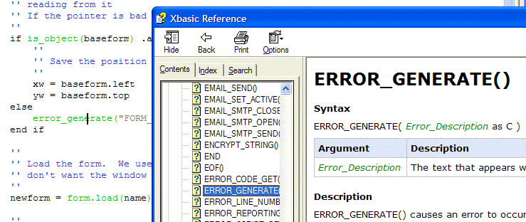
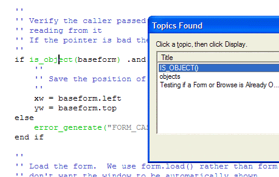
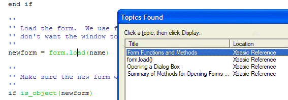
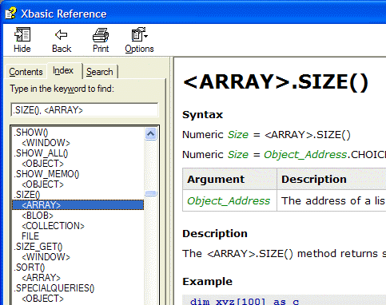

Integrated Local Help and WebHelp
When you click F1 in the Xbasic Editor or Action Script Editor, Alpha Five will display help for the function, method, or language element under the cursor. You can customize help so that clicking F1:
displays a topic from the help files on your PC
displays a topic from the Alpha Software WebHelp through an Internet connection
lets you choose between the two alternatives
You can set the primary and secondary sources of help to be either local help files or Internet WebHelp. If, for any reason, the primary source is unavailable, Alpha Five will retrieve help from the secondary source.
Both help systems include help for all the following topics.
Xbasic functions and methods
Xbasic variables and objects
Xbasic language and syntax
Xdialog functions, controls, and syntax
Programming utilities
Action Scripting functions and usage
Theory of operation
Programming tips
Plus the full contents of the following books:
Alpha Five User Guide
Introduction to Action Scripting
Learning Xbasic
Learning Xdialog
When working in the Code Editor, pressing F1 when your cursor is over an Xbasic function or method will display the appropriate help from the Xbasic Reference help file.
The following example shows an instance where there is only one reference to a function.

The following picture shows the result when a function has multiple references.

Clicking on the desired reference brings up the topic. The following pictures shows the result when a method has multiple references.

If you are looking for information about a method, but are unsure of the object name. The Xbasic Reference help index will show you your options, as illustrated with the .SIZE() methods in the following picture.

See Also
Linking to a External Help File Topic
Supported By
Alpha Five Version 6 and Above
In Alpha Five Version 10.5 and Above, help can come from the Wiki. In Version 11, Wiki help is the only option offered, as the other help sources have become seriously out of date.